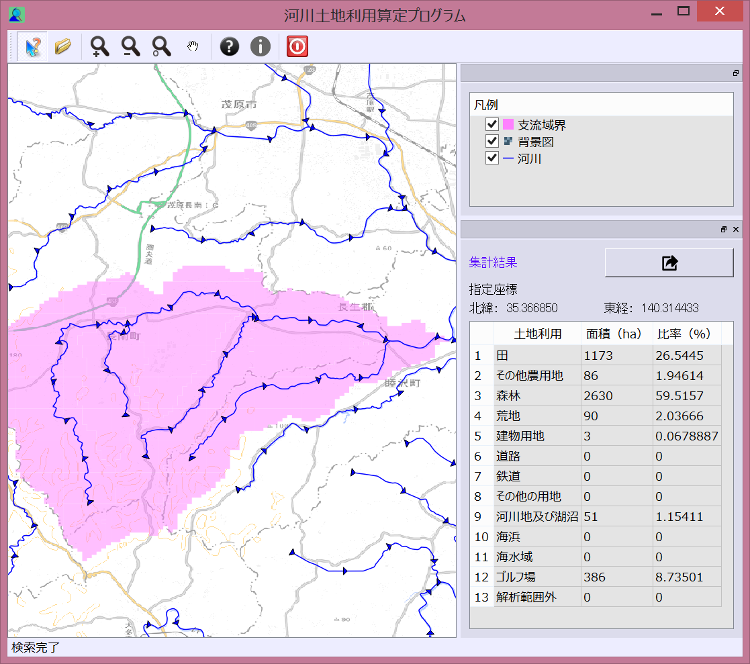
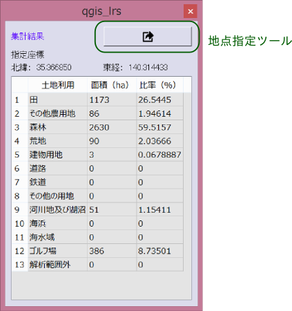

土地利用の算定を行うには、マップキャンバス上で算定の起点を指定する方法と地点が記述されたファイルを読み込む方法があります。
マップキャンバスから起点を指定するには、以下のボタンを押したのち、マップキャンバス上をクリックします。
キャンバス上をクリックすると、その地点の直近にある河川の上流を検索し、上流の土地利用メッシュを集計して、集計ウィンドウに表示します。 また、集計対象となった支流域の領域が着色されて表示されます。 ただし、指定地点から河川までの距離が１００ｍ以内にない場合は集計は行いません。
集計結果をファイルに保存するには、算定結果ウィンドウにある下記のボタンを押します。
| 指定地点座標 | 139.867 | 35.3328 |
| 土地利用集計結果： | ||
| 田 | 86158 | 89.4441791417 |
| その他農用地 | 408 | 0.4235616552 |
| 森林 | 8358 | 8.676785084 |
| 荒地 | 442 | 0.4588584598 |
| 建物用地 | 521 | 0.5408716234 |
| 道路 | 12 | 0.0124576957 |
| 鉄道 | 0 | 0 |
| その他の用地 | 23 | 0.0238772502 |
| 河川地及び湖沼 | 186 | 0.193094284 |
| 海浜 | 0 | 0 |
| 海水域 | 0 | 0 |
| ゴルフ場 | 218 | 0.226314806 |
| 解析範囲外 | 0 | 0 |